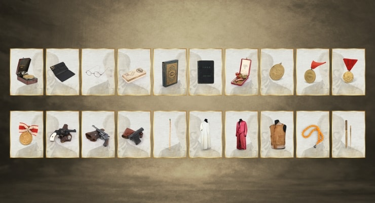
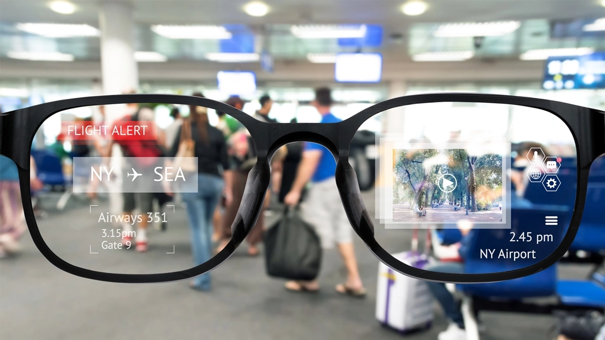
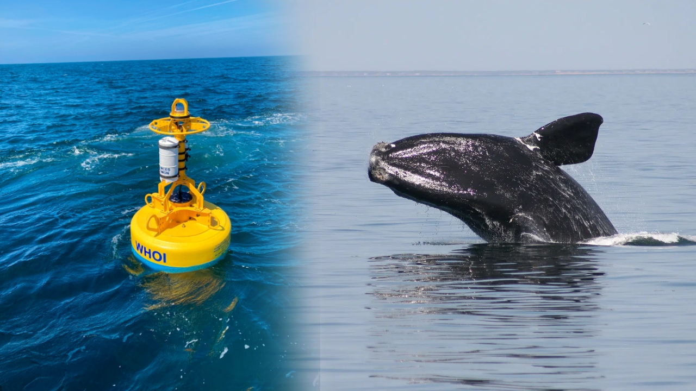

Neler oldu?
BİLİM & TEKNOLOJİ HABERLERİ
1 / 6
![En önemli Meta şirketlerinden Instagram için beta uygulamalar içerisinde farklı yenilikler ortaya çıkmayı sürdürüyor. Instagram, gelişmeye devam ediyor. Bu bağlamda platform için yakında gelecek özelliklerden birisi, profillere yeni bir fotoğraf odaklı düzenleme imkânı olacak. Yakında kişiler paylaştıkları fotoğraflar üzerinde kesme yaparak, profillerinde istedikleri gibi görünmesini sağlayabilecek. Bu özellik aktarıldığı kadarıyla paylaşılan eski fotoğraflarda da çalışacak. Bu sayede profilin genel görüntüsü daha sonradan rahat şekilde düzenlenebilecek. Yakında aynı zamanda yapılan paylaşımların profil ızgarasındaki yerini değiştirme imkânı da gelecek. Ortaya çıktığı kadarıyla kişisel profillerde takipçi sayısını gizleme konusunda da bir deneme çalışması yapan firma, Reels’lere hızlı tepki videosu çekilebilmesi için bir sistem de geliştiriyor. Kişisel profillerdeki kategorileri açılır bir menü içerisine gizlemeyi test eden şirket, başkalarının içeriklerinin paylaşılması sistemini geliştirmeye de devam ediyor. Firma bu retweet gibi düşünebileceğiniz içerikler için kişisel profillere özel bir bölüm de ayarlıyor.](img/instagram.jpg)
Instagram için yakında gelebilecek bazı taze yenilikler ortaya çıktı!
2 / 6
![Tesla'daki araştırmacılar, değiştirilmeden önce 100 yıla kadar dayanabilecek yeni bir elektrikli araç bataryası tasarımını kamuoyuyla paylaştı. 2016'da kurulan Tesla Gelişmiş Batarya Araştırma departmanı, halihazırda elektrikli araçlarda kullanılan bataryalara kıyasla çok daha fazla ömür sunan nikel bazlı bir batarya üretmek için Kanada'daki Dalhousie Üniversitesi'yle işbirliği yaptı. Tesla şu anda lityum demir fosfat (LFP) adı verilen, yüksek enerji yoğunluğu sağlayarak şarjlar arasında daha uzun aralık sunan bir tür lityum iyon batarya üretiyor ve kullanıyor.](img/teslaBatarya.jpg)
Tesla'dan 100 sene boyunca kullanılabilecek yeni batarya tasarımı!
3 / 6
![Haritalama teknolojisi ile, Bolivya’da bir zamanlar gelişmiş kültürlerin var olduğunu gösteren kentsel yerleşmeler tespit edildi. Amazonda ilk kez keşfedilen kentsel merkezler, arkeolojik dogmaya meydan okuyor. Bilim insanları, Amazon Havzası’nın güneybatısındaki gizemli höyüklerin bir zamanlar antik kentsel yerleşim yerleri olduğunu keşfetti. Araziyi havadan haritalamak için bir uzaktan algılama teknolojisi kullanan bir araştırma ekibi, yaklaşık 1.500 yıl önce başlayarak, antik Amazonların, 22 metre yüksekliğindeki toprak piramitlere sahip ve kilometrelerce yükseltilmiş yollarla çevrelenmiş yoğun nüfuslu merkezler inşa ettiklerini ve yaşadıklarını ortaya çıkardı. Alman Arkeoloji Enstitüsü’nde arkeolog ve ekibin bir üyesi olan Heiko Prümers, bu yerleşimlerin karmaşıklığının “akıllara durgunluk verici” olduğunu söylüyor.](img/amazonAntikYerlesim.jpg)
Amazon’da Oldukça Şaşırtıcı Antik Yerleşimler Keşfedildi!
4 / 6
![Sosyal medya platformu Twitter, kişisel verilerin gizliliğini koruyamadığı gerekçesiyle 150 milyon dolar para cezası ödeyecek. ABD Adalet Bakanlığı ve Federal Ticaret Komisyonu’ndan yapılan açıklamada, Twitter'ın kullanıcı verilerinin 'gizliliğini ve güvenliğini' Mayıs 2013 - Eylül 2019 döneminde sağlayamadığı ifade edildi. Twitter ile yapılan anlaşma uyarınca platformun 150 milyon dolar para cezası ödeyeceğinin belirtilen açıklamada, şirketin kullanıcı verilerinin gizliliğine yönelik yeni önlemler alacağı kaydedildi.](img/twitterCeza.jpg)
Twitter, 150 milyon dolar ceza ödeyecek!
5 / 6
![Arjantin’deki araştırmacılar, Güney Amerika’da şimdiye kadar bulunan en büyük teruzor türünü ortaya çıkardılar. Mendoza ilinde yer alan Plottier Formasyonu’nda keşfedilen iki dev uçan sürüngen, paleontologlar tarafından “ölüm ejderhası” olarak adlandırıldı. İki örneğin kanat açıklıkları sırasıyla yaklaşık 7 metre genişliğinde ve 9 metre genişliğinde ölçüldü. Araştırmacılar, bunların, Kretase döneminin sonunda (yaklaşık 146 milyon ila 66 milyon yıl önce) yaşamış bir teruzor ailesi olan azhdarchidler olduklarını doğruladılar.](img/ArjantinDevSurungen.jpg)
Arjantin’de Dev Uçan Sürüngen ‘Ölüm Ejderhası’ Bulundu!
6 / 6

Atatürk’ün kişisel eşyaları NFT olarak sergilenecek!
![Yeni bir eve taşındığımız zaman en büyük sorunlardan bir tanesi, mevcut mobilyaları yeni evin odalarından birine taşımaktır. Sonuçta mobilyalar bir önceki eve göre alındığı için çoğu zaman koridorlardan geçmez. Hele ki koridor düz biçimde değil ise bu daha da büyük bir dert halini alır. Sonuçta matematikçilerin de sıradan insanlar gibi bir hayatı var. Bir taşınma esnasında akla gelip gelmediği bilinmese de bu konu matematikte daha özelinde geometride bir problemin ortaya çıkmasına neden olmuştur. Bu problem yani taşınan kanepe problemi ( İng: moving sofa problem) hala çözümsüz bekleyen problemler arasında yer almaktadır.](img/CozulemeyenProblem.jpg)
Matematikçiler Taşınan Kanepe Problemini 50 Yıldır Neden Çözemiyorlar?

Google, Geleceğin Gözdesi AR Gözlüğü'nü Tanıttı!
Steve Jobs’un isteyip de başaramadığı iPhone özelliği ortaya çıktı!
Google Android 13’ü tanıttı! İşte tüm yenilikler..
![NASA, kara deliklerin yıldızları nasıl yuttuğuna dair bazı görüntüleri paylaştı. Görüntüler bilinen iki büyük kara deliği gözler önüne seriyor. NASA, bir yıldızı yiyen kara deliğin yavaş spiralini görselleştirmede harika bir iş çıkardığı yeni bir video yayınladı. Video, en iyi bilinen kara delik sistemlerini insanlara göstermeyi amaçlıyor. NASA, bir yıldızın bir kara deliğin kütleçekimsel çekimine yakalandığı birçok farklı sistemi videoda gösteriyor. Video, ikonik göksel varlıkların ne kadar öldürücü olduğunu hatırlatıyor.](img/kara-delikler-yildizlari-nasil-yutar.jpg)
NASA'nın Yeni Videosu Bir Kara Deliğin Yıldızı Nasıl Yuttuğunu Gösteriyor!

Nesli Tükenmekte Olan Balinalar Robotlar Yardımıyla Kurtarılabilir: Peki Nasıl?
×